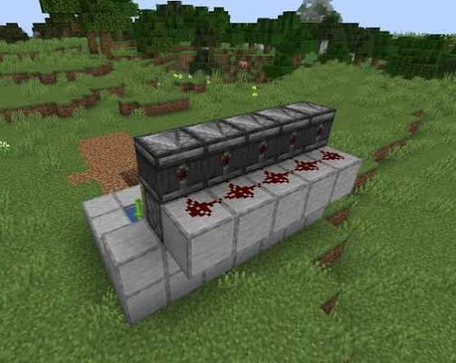
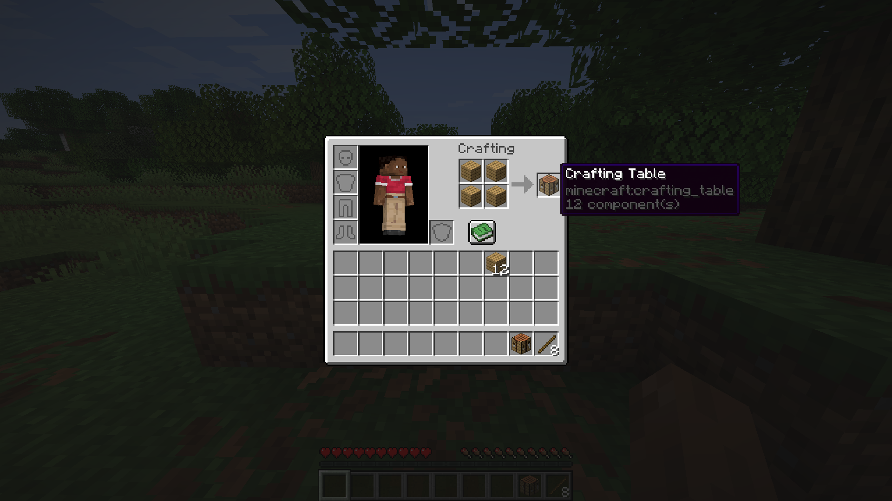
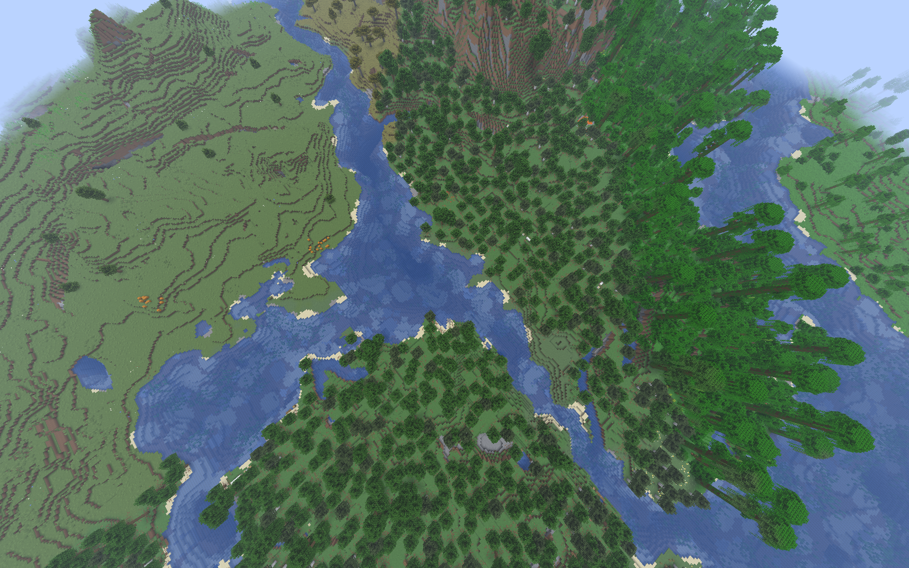
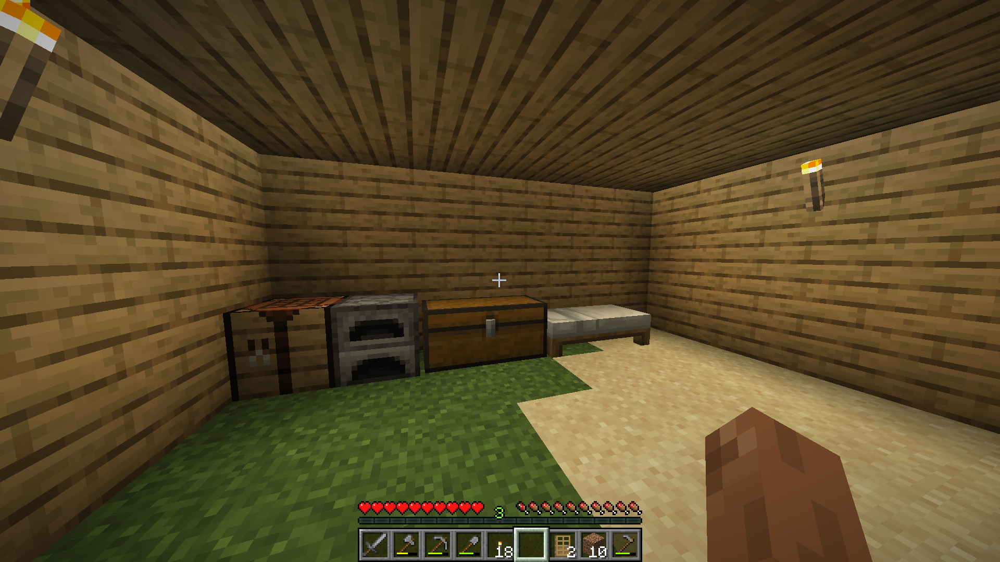

Survival
Survival
5 Essential Tips to Survive Your First Night in Minecraft
BeginnerAbout 1 minVersion-independent
Starting a new world is exciting, but the first night can be brutal. Get ready with wood, tools, food, shelter, and light.

Your hub for Minecraft survival tips, creative builds, and practical tutorials for every type of player.
A practical collection of survival routes, farm ideas, and base-building guides for every new Minecraft world.
Read the featured guide
Browse practical guides for surviving, building, and farming in Minecraft.
Showing 13 articles
Survival
BeginnerAbout 1 minVersion-independent
Starting a new world is exciting, but the first night can be brutal. Get ready with wood, tools, food, shelter, and light.
 Building
Building
IntermediateAbout 1 minVersion-independent
Plan a permanent base that balances good looks and function, from choosing a location to designing useful spaces.

FarmingBeginnerAbout 5 minVersion-independent
Use simple redstone mechanics to automate sugarcane, melon, pumpkin, and wool collection.
 Survival
Survival
Prepare for a safe mining trip, smelt your first iron, and choose the upgrades that help most early on.
 Survival
Survival
Pack for a cave trip, mark a clear route, and know when it is time to head back to the surface.
 Farming
Farming
Build a dependable food routine with crops, cooked meals, and a small reserve for exploring.

BuildingPlan a compact enchanting nook with room for bookshelves, lapis, and a safe item-preparation area.

SurvivalMake a return plan, pack practical supplies, and reduce the risk of losing your way through a portal.
 Survival
Survival
Organize a village visit with lighting, safe paths, useful supplies, and a simple trading plan.
 Building
Building
Use layered lighting to make rooms readable, welcoming, and visually interesting.
 Farming
Farming
Make use of extra plant items with a small composter station beside your crop plots.

BuildingSort common supplies, leave space for expansion, and make frequently used items easy to reach.
 Building
Building
Connect your base, farms, and nearby landmarks with simple routes that are safe after dark.
You haven't saved any guides yet.
Your recently viewed guides will appear here.